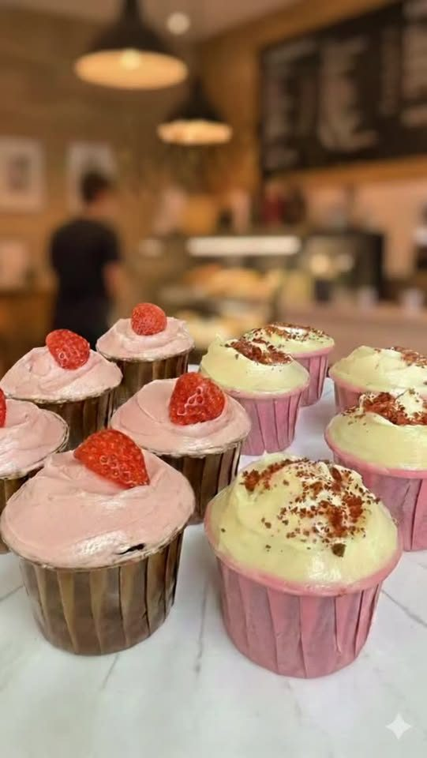
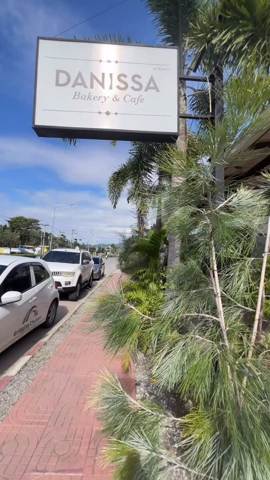
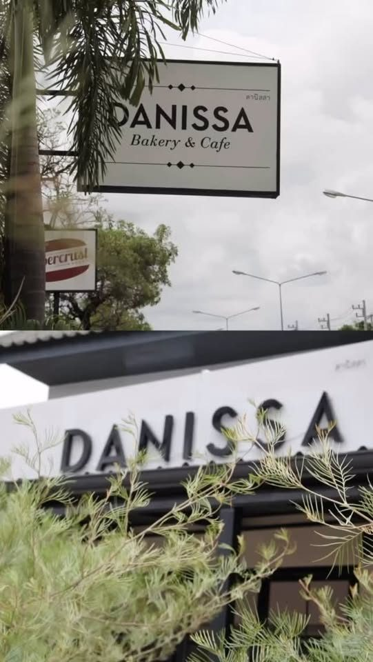

ดานิสสา เบเกอรี่ แอนด์ คาเฟ่
Good bread takes time
เบเกอรี่ คาเฟ่ หางดง
Bakery, cafe and restaurant on Ratchaphruek Road, Hang Dong. Slow-fermented sourdough fresh from the oven, brunch on grilled sourdough, cakes and coffee, with outdoor seating.
Slow-fermented, fresh from the oven
Spinach & Feta, Tuna Melt, Cajun Shrimp
Grown-up Mac & Cheese, Waffles with bacon & egg, Pita & Hummus
Cupcakes, pies, coffee and tea



111/1 Moo 7, Ratchaphruek Road, Nong Khwai, Hang Dong, Chiang Mai 50230